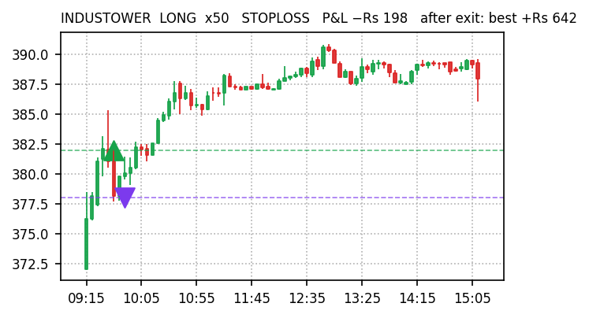
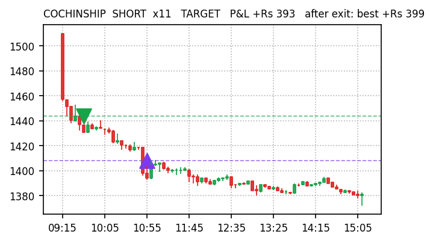
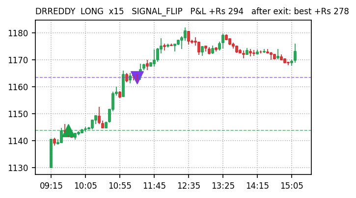
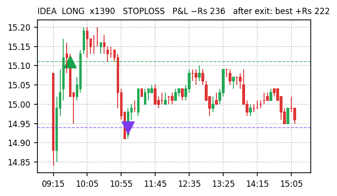
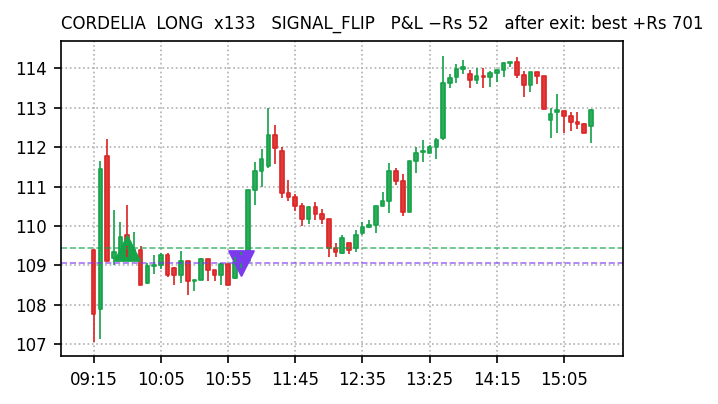
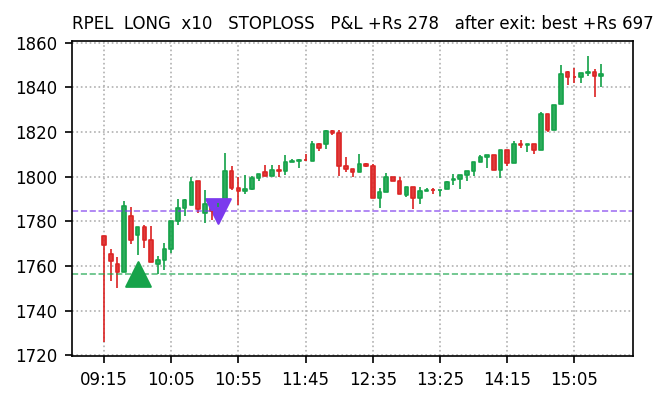
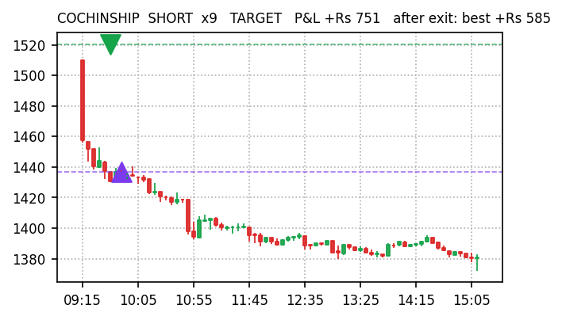
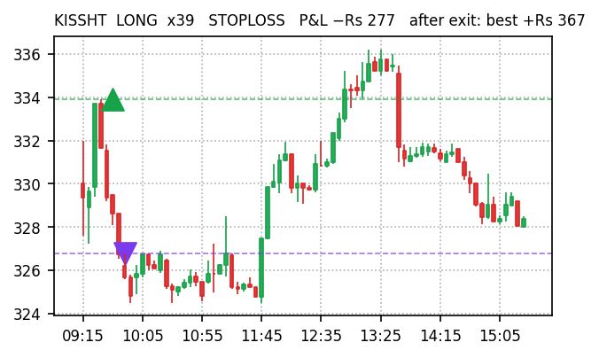

| Gross P&L | −Rs 536 |
| Net of costs | −Rs 1,450 (costs Rs 914) |
| Trades | 49 L 11 / S 38 |
| Win rate | 45% (22W / 27L) |
| Exit reason | # | P&L |
|---|---|---|
| STOPLOSS | 17 | −Rs 1,620 |
| FLAT_FORCE_EXIT | 10 | −Rs 7 |
| TIME_EXIT | 15 | +Rs 200 |
| SIGNAL_FLIP | 5 | +Rs 377 |
| TARGET | 2 | +Rs 514 |
| Held everything to 15:15 instead of exiting | −Rs 2,102 |
| Stop-losses that later reversed our way (7) | +Rs 753 |
| Perfect-exit ceiling after our exits (upper bound) | +Rs 3,112 |
| Max favourable excursion from entry | +Rs 4,021 |
| Gross P&L | +Rs 1,060 |
| Net of costs | −Rs 7 (costs Rs 1,067) |
| Trades | 73 L 10 / S 63 |
| Win rate | 32% (23W / 50L) |
| Exit reason | # | P&L |
|---|---|---|
| STOPLOSS | 39 | −Rs 2,075 |
| SIGNAL_FLIP | 1 | −Rs 52 |
| FLAT_FORCE_EXIT | 15 | −Rs 26 |
| TIME_EXIT | 12 | +Rs 52 |
| TARGET | 6 | +Rs 3,160 |
| Held everything to 15:15 instead of exiting | −Rs 1,795 |
| Stop-losses that later reversed our way (13) | +Rs 1,228 |
| Perfect-exit ceiling after our exits (upper bound) | +Rs 5,833 |
| Max favourable excursion from entry | +Rs 8,132 |
Every closed trade replayed against Kite 5-minute candles after the close: P&L if held to 15:15 (hold Δ), which stop-losses reversed afterwards, and how far price travelled our way after exit (ceiling). Trades exited at the 15:15 force-close count as zero.
| Stock | Dir | Exit | Time | P&L | Hold Δ | Ceiling |
|---|---|---|---|---|---|---|
| INDUSTOWER | LONG | STOP | 09:36→09:46 | −Rs 198 | +Rs 498 | +Rs 642 |
| COCHINSHIP | SHORT | TGT | 09:36→10:53 | +Rs 393 | +Rs 300 | +Rs 399 |
| DRREDDY | LONG | FLIP | 09:36→11:15 | +Rs 294 | +Rs 142 | +Rs 278 |
| IDEA | LONG | STOP | 09:36→11:03 | −Rs 236 | +Rs 28 | +Rs 222 |
| SUPREMEIND | SHORT | STOP | 10:10→10:40 | −Rs 51 | +Rs 146 | +Rs 196 |
| YESBANK | LONG | TGT | 11:15→13:26 | +Rs 121 | +Rs 98 | +Rs 170 |
| KALYANKJIL | SHORT | STOP | 09:36→09:46 | −Rs 139 | −Rs 213 | +Rs 162 |
| NATIONALUM | SHORT | STOP | 09:36→10:20 | −Rs 154 | −Rs 315 | +Rs 86 |
| Stock | Dir | Exit | Time | P&L | Hold Δ | Ceiling |
|---|---|---|---|---|---|---|
| CORDELIA | LONG | FLIP | 09:39→11:03 | −Rs 52 | +Rs 519 | +Rs 701 |
| RPEL | LONG | STOP | 09:39→10:39 | +Rs 278 | +Rs 616 | +Rs 697 |
| COCHINSHIP | SHORT | TGT | 09:39→09:49 | +Rs 751 | +Rs 504 | +Rs 585 |
| KISSHT | LONG | STOP | 09:39→09:49 | −Rs 277 | +Rs 62 | +Rs 367 |
| OLAELEC | LONG | STOP | 09:39→09:49 | −Rs 278 | −Rs 40 | +Rs 347 |
| SANGHVIMOV | SHORT | STOP | 10:04→10:39 | −Rs 81 | +Rs 112 | +Rs 307 |
| KPEL | SHORT | TGT | 09:39→09:49 | +Rs 292 | +Rs 256 | +Rs 295 |
| GLAXO | SHORT | STOP | 09:39→11:13 | −Rs 11 | +Rs 165 | +Rs 280 |
56 dashboard BUYs skipped by every engine: 15 rose more than 0.5% (wrong to skip), 8 fell more than 0.5% (right to skip), 23 flat. Gross upside on the wrong calls at Rs 11,000 each:
| Stock | Day move | At Rs 11K |
|---|---|---|
| VENKEYS | +5.23% | +Rs 575 |
| BANDHANBNK | +2.78% | +Rs 306 |
| CARTRADE | +2.73% | +Rs 300 |
| MANKIND | +2.60% | +Rs 286 |
| VOLTAS | +2.04% | +Rs 224 |
| EQUITASBNK | +2.01% | +Rs 221 |
| APOLLOTYRE | +1.80% | +Rs 198 |
| KOTAKBANK | +1.56% | +Rs 172 |
| WIPRO | +1.18% | +Rs 130 |
| ICICIPRULI | +1.18% | +Rs 130 |
| CROMPTON | +1.12% | +Rs 123 |
| LTF | +1.01% | +Rs 111 |
| KFINTECH | +1.00% | +Rs 110 |
| BANKBARODA | +0.95% | +Rs 104 |
| PNB | +0.95% | +Rs 104 |
| Total gross | +Rs 3,095 |
green marker = our entryred candle downpurple marker = our exitdashed lines = entry / exit price








| Engine | Actual | live | arm0.5 | arm0.3 | fixed |
|---|---|---|---|---|---|
| v5 | −Rs 1,450 | −Rs 1,773 | −Rs 1,501 | −Rs 1,283 | −Rs 1,773 |
| v5_wide | −Rs 7 | +Rs 650 | +Rs 889 | +Rs 1,128 | +Rs 164 |
Same entries, stops, targets; only the trailing arm differs. Compare bands to the replayed 'live' column, not to actual.
Sources: docs/paper-trades/*/2026-09-11.json · Kite historical 5-min · docs/reports/missed-trades-2026-09-11.md. Paper trading only, no real orders.